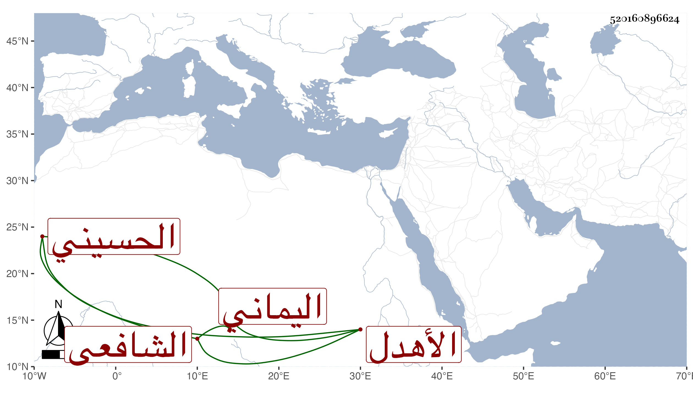

0902Sakhawi.DawLamic.ITO20230111-ara1.EIS1600.520160896624
Biography ID: 520160896624
الأهدل البدر أبو محمد حسين بن عبد الرحمن بن محمد بن علي بن أبي بكر الحسيني نسبا وبلدا اليماني الشافعي وله أولاد منهم صديق وأحمد والهادي وأحمد السيد والعفيف عبد الله ومحمد وهما حيان في سنة ثلاث وتسعين فلصديق من النجباء حسين أحد الآخذين عني وهو حي وعبد الرحمن وعبد الله ماتا في آخرين ولعبد الله الجمال محمد أحد الآخذين عني في الأحياء ولأحمد السيد وقيل له ذلك ليتميز عن أخيه الآخر أحمد جمال الدين محمد عبد المحسن أحد الآخذين عني حي ويقال لكل منهم ابن الاهدل .
